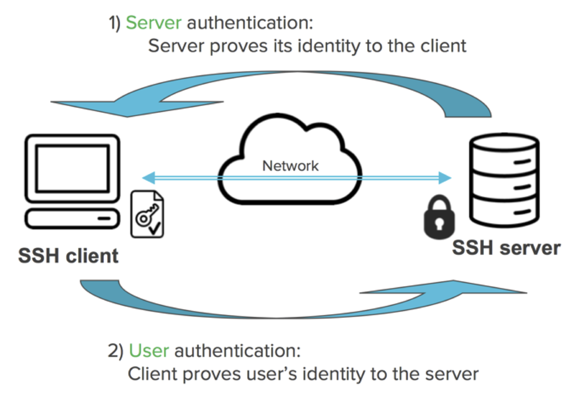

Debian/Ubuntu is a popular choice for personal computers.
RHEL/CentOS is popular on servers. (In December 2020, Red Hat terminated the development of CentOS Linux distribution.)
The teaching server for this class runs CentOS 7. UCLA Hoffman2 cluster runs CentOS 7.9.2009 (as of 2022-01-01).
MacOS was originally derived from Unix/Linux (Darwin kernel). It is POSIX compliant. Most shell commands we review here apply to MacOS terminal as well. Windows/DOS, unfortunately, is a totally different breed.
The -l option indicates it should be a login shell.
Change your login shell permanently:
chsh-s /bin/bash [USERNAME]
Then log out and log in.
4.2 Command history and bash completion
We can navigate to previous/next commands by the upper and lower keys, or maintain a command history stack using pushd and popd commands.
Bash provides the following standard completion for the Linux users by default. Much less typing errors and time!
Pathname completion.
Filename completion.
Variablename completion: echo $[TAB][TAB].
Username completion: cd ~[TAB][TAB].
Hostname completion ssh huazhou@[TAB][TAB].
It can also be customized to auto-complete other stuff such as options and command’s arguments. Google bash completion for more information.
4.3man is man’s best friend
Online help for shell commands: man [COMMANDNAME].
# display documentation for the ls commandman ls
This system has been minimized by removing packages and content that are
not required on a system that users do not log into.
To restore this content, including manpages, you can run the 'unminimize'
command. You will still need to ensure the 'man-db' package is installed.
5 Navigate file system
5.1 Linux directory structure
Upon log in, user is at his/her home directory.
tree command (if installed) displays directory structure. tree -L levels display levels directories deep.
# display only directories in levels 1, 2 from root directorytree-d-L 1 /
-rw-r--r-- 1 rstudio rstudio 321281 Jan 10 2018 key_authentication_1.png
-rw-r--r-- 1 rstudio rstudio 96119 Jan 9 2018 key_authentication_2.png
-rw-r--r-- 1 rstudio rstudio 11662 Jan 8 2018 linux_directory_structure.png
-rw-r--r-- 1 rstudio rstudio 42472 Jan 7 2015 linux_filepermission_oct.png
-rw-r--r-- 1 rstudio rstudio 102188 Jan 9 2018 linux_filepermission.png
-rw-r--r-- 1 rstudio rstudio 437112 Jan 5 2021 redhat_kills_centos.png
-rw-r--r-- 1 rstudio rstudio 141962 Jan 6 2015 Richard_Stallman_2013.png
-rw-r--r-- 1 rstudio rstudio 685657 Jan 12 2022 screenshot_top.png
5.7 Regular expression
Wildcards are examples of regular expressions.
Regular expressions are a powerful tool to efficiently sift through large amounts of text: record linking, data cleaning, scraping data from website or other data-feed.
Google regular expressions to learn.
6 Work with text files
6.1 View/peek text files
cat prints the contents of a file:
cat runSim.R
## parsing command arguments
for (arg in commandArgs(TRUE)) {
eval(parse(text=arg))
}
## check if a given integer is prime
isPrime = function(n) {
if (n <= 3) {
return (TRUE)
}
if (any((n %% 2:floor(sqrt(n))) == 0)) {
return (FALSE)
}
return (TRUE)
}
## estimate mean only using observation with prime indices
estMeanPrimes = function (x) {
n = length(x)
ind = sapply(1:n, isPrime)
return (mean(x[ind]))
}
# simulate data
x = rnorm(n)
# estimate mean
estMeanPrimes(x)
head prints the first 10 lines of a file:
head runSim.R
## parsing command arguments
for (arg in commandArgs(TRUE)) {
eval(parse(text=arg))
}
## check if a given integer is prime
isPrime = function(n) {
if (n <= 3) {
return (TRUE)
}
head -l prints the first \(l\) lines of a file:
head-15 runSim.R
## parsing command arguments
for (arg in commandArgs(TRUE)) {
eval(parse(text=arg))
}
## check if a given integer is prime
isPrime = function(n) {
if (n <= 3) {
return (TRUE)
}
if (any((n %% 2:floor(sqrt(n))) == 0)) {
return (FALSE)
}
return (TRUE)
}
tail prints the last 10 lines of a file:
tail runSim.R
n = length(x)
ind = sapply(1:n, isPrime)
return (mean(x[ind]))
}
# simulate data
x = rnorm(n)
# estimate mean
estMeanPrimes(x)
tail -l prints the last \(l\) lines of a file:
tail-15 runSim.R
return (TRUE)
}
## estimate mean only using observation with prime indices
estMeanPrimes = function (x) {
n = length(x)
ind = sapply(1:n, isPrime)
return (mean(x[ind]))
}
# simulate data
x = rnorm(n)
# estimate mean
estMeanPrimes(x)
Questions:
How to see the 11th line of the file and nothing else?
What about the 11th to the last line?
6.2 Piping and redirection
| sends output from one command as input of another command.
ls-l|head-5
total 2460
-rw-r--r-- 1 rstudio rstudio 258 Jan 16 2020 autoSim.R
-rw-r--r-- 1 rstudio rstudio 110345 Jan 11 2015 Emacs_Reference_Card.pdf
-rw-r--r-- 1 rstudio rstudio 157353 Jan 4 2019 IDRE_Winter_2019_Workshops.pdf
-rw-r--r-- 1 rstudio rstudio 321281 Jan 10 2018 key_authentication_1.png
> directs output from one command to a file.
>> appends output from one command to a file.
< reads input from a file.
Combinations of shell commands (grep, sed, awk, …), piping and redirection, and regular expressions allow us pre-process and reformat huge text files efficiently.
See HW1.
6.3less is more; more is less
more browses a text file screen by screen (only downwards). Scroll down one page (paging) by pressing the spacebar; exit by pressing the q key.
less is also a pager, but has more functionalities, e.g., scroll upwards and downwards through the input.
less doesn’t need to read the whole file, i.e., it loads files faster than more.
6.4grep
grep prints lines that match an expression:
Show lines that contain string CentOS:
# quotes not necessary if not a regular expressiongrep'CentOS' linux.qmd
- RHEL/CentOS is popular on servers. (In December 2020, Red Hat terminated the development of CentOS Linux distribution.)
- The teaching server for this class runs CentOS 7. UCLA Hoffman2 cluster runs CentOS 7.9.2009 (as of 2022-01-01).
- Show lines that contain string `CentOS`:
grep 'CentOS' linux.qmd
grep 'CentOS' *.qmd
grep -n 'CentOS' linux.qmd
- Replace `CentOS` by `RHEL` in a text file:
sed 's/CentOS/RHEL/' linux.qmd | grep RHEL
Search multiple text files:
grep'CentOS'*.qmd
- RHEL/CentOS is popular on servers. (In December 2020, Red Hat terminated the development of CentOS Linux distribution.)
- The teaching server for this class runs CentOS 7. UCLA Hoffman2 cluster runs CentOS 7.9.2009 (as of 2022-01-01).
- Show lines that contain string `CentOS`:
grep 'CentOS' linux.qmd
grep 'CentOS' *.qmd
grep -n 'CentOS' linux.qmd
- Replace `CentOS` by `RHEL` in a text file:
sed 's/CentOS/RHEL/' linux.qmd | grep RHEL
Show matching line numbers:
grep-n'CentOS' linux.qmd
43:- RHEL/CentOS is popular on servers. (In December 2020, Red Hat terminated the development of CentOS Linux distribution.)
49:- The teaching server for this class runs CentOS 7. UCLA Hoffman2 cluster runs CentOS 7.9.2009 (as of 2022-01-01).
341:- Show lines that contain string `CentOS`:
344:grep 'CentOS' linux.qmd
349:grep 'CentOS' *.qmd
354:grep -n 'CentOS' linux.qmd
371:- Replace `CentOS` by `RHEL` in a text file:
373:sed 's/CentOS/RHEL/' linux.qmd | grep RHEL
Find all files in current directory with .png extension:
drwxr-xr-x 24 rstudio rstudio 768 Dec 28 00:11 .
drwxr-xr-x 22 rstudio rstudio 704 Mar 9 2022 ..
drwxr-xr-x 4 rstudio rstudio 128 Dec 28 00:08 linux_files
6.5sed
sed is a stream editor.
Replace CentOS by RHEL in a text file:
sed's/CentOS/RHEL/' linux.qmd |grep RHEL
- RHEL/RHEL is popular on servers. (In December 2020, Red Hat terminated the development of CentOS Linux distribution.)
- The teaching server for this class runs RHEL 7. UCLA Hoffman2 cluster runs CentOS 7.9.2009 (as of 2022-01-01).
- Show lines that contain string `RHEL`:
grep 'RHEL' linux.qmd
grep 'RHEL' *.qmd
grep -n 'RHEL' linux.qmd
- Replace `RHEL` by `RHEL` in a text file:
sed 's/RHEL/RHEL/' linux.qmd | grep RHEL
6.6awk
awk is a filter and report writer.
First let’s display the content of the file /etc/passwd:
Each line contains fields (1) user name, (2) password, (3) user ID, (4) group ID, (5) user ID info, (6) home directory, and (7) command shell, separated by :.
Print sorted list of login names:
awk-F:'{ print $1 }' /etc/passwd |sort|head-10
_apt
backup
bin
daemon
games
gnats
irc
list
lp
mail
Print number of lines in a file, as NR stands for Number of Rows:
Emacs is a powerful text editor with extensive support for many languages including R, \(\LaTeX\), python, and C/C++; however it’s not installed by default on many Linux distributions.
Basic survival commands:
emacs filename to open a file with emacs.
CTRL-x CTRL-f to open an existing or new file.
CTRL-x CTRX-s to save.
CTRL-x CTRL-w to save as.
CTRL-x CTRL-c to quit.
Google emacs cheatsheet
C-<key> means hold the control key, and press <key>. M-<key> means press the Esc key once, and press <key>.
6.7.2 Vi
Vi is ubiquitous (POSIX standard). Learn at least its basics; otherwise you can edit nothing on some clusters.
Basic survival commands:
vi filename to start editing a file.
vi is a modal editor: insert mode and normal mode. Pressing i switches from the normal mode to insert mode. Pressing ESC switches from the insert mode to normal mode.
:x<Return> quits vi and saves changes.
:q!<Return> quits vi without saving latest changes.
:w<Return> saves changes.
:wq<Return> quits vi and saves changes.
Google vi cheatsheet
7 IDE (Integrated Development Environment)
Statisticians/data scientists write a lot of code. Critical to adopt a good IDE that goes beyond code editing: syntax highlighting, executing code within editor, debugging, profiling, version control, etc.
RStudio, Eclipse, Emacs, Matlab, Visual Studio, etc.
8 Processes
8.1 Cancel a non-responding program
Press Ctrl+C to cancel a non-responding or long-running program.
8.2 Processes
OS runs processes on behalf of user.
Each process has Process ID (PID), Username (UID), Parent process ID (PPID), Time and data process started (STIME), time running (TIME), etc.
ps
PID TTY TIME CMD
2397 ? 00:00:24 rsession
5412 ? 00:00:00 quarto
5419 ? 00:00:10 deno
7101 ? 00:00:01 R
7213 ? 00:00:00 sh
7214 ? 00:00:00 ps
top prints realtime process information (very useful).
top
Exit the top program by pressing the q key.
9 Secure shell (SSH)
9.1 SSH
SSH (secure shell) is the dominant cryptographic network protocol for secure network connection via an insecure network.
On Linux or Mac terminal, access the teaching server by
ssh [USERNAME]@server.ucla-biostat-203b.com
Replace above [USERNAME] by your account user name on teaching server.
For Windows users, there are at least three ways: (1) (highly recommended) Git Bash which is included in Git for Windows, (2) (not recommended) PuTTY program (free), or (3) (may be an overkill for this class) use WSL for Windows to install a full fledged Linux system within Windows.
9.2 Advantages of keys over password
Key authentication is more secure than password. Most passwords are weak.
Script or a program may need to systematically SSH into other machines.
Log into multiple machines using the same key.
Seamless use of many services: Git/GitHub, AWS or Google cloud service, parallel computing on multiple hosts, Travis CI (continuous integration) etc.
Many servers only allow key authentication and do not accept password authentication.
9.3 Key authentication

Public key. Put on the machine(s) you want to log in.
Private key. Put on your own computer. Consider this as the actual key in your pocket; never give private key to others. For fun:
Messages from server to your computer is encrypted with your public key. It can only be decrypted using your private key.
Messages from your computer to server is signed with your private key (digital signatures) and can be verified by anyone who has your public key (authentication).
9.4 Steps to generate keys
On Linux, Mac, or Windows Git Bash, to generate a key pair:
- `[KEY_FILENAME]` is the name that you want to use for your SSH key files. For example, a filename of `id_rsa` generates a private key file named `id_rsa` and a public key file named `id_rsa.pub`.
- `[USERNAME]` is the user for whom you will apply this SSH key.
- Use a (**optional**) paraphrase different from password.
Set correct permissions on the .ssh folder and key files.
The permission for the ~/.ssh folder should be 700 (drwx------).
The permission of the private key ~/.ssh/id_rsa should be 600 (-rw-------).
The permission of the public key ~/.ssh/id_rsa.pub should be 644 (-rw-r--r--).
From now on, you don’t need password each time you connect from your machine to the teaching server.
If you set paraphrase when generating keys, you’ll be prompted for the paraphrase each time the private key is used. Avoid repeatedly entering the paraphrase by using ssh-agent on Linux/Mac or Pagent on Windows.
Same key pair can be used between any two machines. We don’t need to regenerate keys for each new connection.
9.5 Transfer files between machines
scp securely transfers files between machines using SSH.
::: {.cell}
## copy file from local to remotescp [LOCALFILE] [USERNAME]@server.ucla-biostat-203b.com:/[PATH_TO_FOLDER]
:::
::: {.cell}
## copy file from remote to localscp [USERNAME]@server.ucla-biostat-203b.com:/[PATH_TO_FILE] [PATH_TO_LOCAL_FOLDER]
:::
sftp is FTP via SSH.
Globus is GUI program for securely transferring files between machines. To use Globus you will have to go to https://www.globus.org/ and login through UCLA by selecting your existing organizational login as UCLA. Then you will need to download their Globus Connect Personal software, then set your laptop as an endpoint. Very detailed instructions can be found at https://www.hoffman2.idre.ucla.edu/file-transfer/globus/.
GUIs for Windows (WinSCP) or Mac (Cyberduck).
You can even use RStudio to upload files to a remote machine with RStudio Server installed.
(Preferred way) Use a version control system (git, svn, cvs, …) to sync project files between different machines and systems.
9.6 Line breaks in text files
Windows uses a pair of CR and LF for line breaks.
Linux/Unix uses an LF character only.
MacOS X also uses a single LF character. But old Mac OS used a single CR character for line breaks.
If transferred in binary mode (bit by bit) between OSs, a text file could look a mess.
Most transfer programs automatically switch to text mode when transferring text files and perform conversion of line breaks between different OSs; but I used to run into problems using WinSCP. Sometimes you have to tell WinSCP explicitly a text file is being transferred.
10 Run R in Linux
10.1 Interactive mode
Start R in the interactive mode by typing R in shell.
Then run R script by
source("script.R")
10.2 Batch mode
Demo script meanEst.R implements an (terrible) estimator of mean \[
{\widehat \mu}_n = \frac{\sum_{i=1}^n x_i 1_{i \text{ is prime}}}{\sum_{i=1}^n 1_{i \text{ is prime}}}.
\]
cat meanEst.R
To run your R code non-interactively aka in batch mode, we have at least two options:
# default output to meanEst.RoutR CMD BATCH meanEst.R
or
# output to stdoutRscript meanEst.R
Typically automate batch calls using a scripting language, e.g., Python, Perl, and shell script.
10.3 Pass arguments to R scripts
Specify arguments in R CMD BATCH:
R CMD BATCH '--args mu=1 sig=2 kap=3' script.R
Specify arguments in Rscript:
Rscript script.R mu=1 sig=2 kap=3
Parse command line arguments using magic formula
for (arg incommandArgs(TRUE)) {eval(parse(text=arg))}
in R script. After calling the above code, all command line arguments will be available in the global namespace.
To understand the magic formula commandArgs, run R by:
runSim.R has components: (1) command argument parser, (2) method implementation, (3) data generator with unspecified parameter n, and (4) estimation based on generated data.
## parsing command arguments
for (arg in commandArgs(TRUE)) {
eval(parse(text=arg))
}
## check if a given integer is prime
isPrime = function(n) {
if (n <= 3) {
return (TRUE)
}
if (any((n %% 2:floor(sqrt(n))) == 0)) {
return (FALSE)
}
return (TRUE)
}
## estimate mean only using observation with prime indices
estMeanPrimes = function (x) {
n = length(x)
ind = sapply(1:n, isPrime)
return (mean(x[ind]))
}
# simulate data
x = rnorm(n)
# estimate mean
estMeanPrimes(x)
Call runSim.R with sample size n=100:
R CMD BATCH '--args n=100' runSim.R
or
Rscript runSim.R n=100
[1] 0.05624855
10.4 Run long jobs
Many statistical computing tasks take long: simulation, MCMC, etc. If we exit Linux when the job is unfinished, the job is killed.
nohup command in Linux runs program(s) immune to hangups and writes output to nohup.out by default. Logging out will not kill the process; we can log in later to check status and results.
nohup is POSIX standard thus available on Linux and MacOS.
Run runSim.R in background and writes output to nohup.out:
nohup Rscript runSim.R n=100 &
[1] 0.08369185
The & at the end of the command instructs Linux to run this command in background, so we gain control of the terminal immediately.
10.5 screen
screen is another popular utility, but not installed by default.
Typical workflow using screen.
Access remote server using ssh.
Start jobs in batch mode.
Detach jobs.
Exit from server, wait for jobs to finish.
Access remote server using ssh.
Re-attach jobs, check on progress, get results, etc.
10.6 Use R to call R
R in conjuction with nohup (or screen) can be used to orchestrate a large simulation study.
It can be more elegant, transparent, and robust to parallelize jobs corresponding to different scenarios (e.g., different generative models) outside of the code used to do statistical computation.
We consider a simulation study in R but the same approach could be used with code written in Julia, Matlab, Python, etc.
Python in many ways makes a better glue.
Suppose we have
runSim.R which runs a simulation based on command line argument n.
A large collection of n values that we want to use in our simulation study.
Access to a server with 128 cores.
How to parallelize the job?
Option 1: manually call runSim.R for each setting.
Option 2 (smarter): automate calls using R and nohup.


{kind=link}